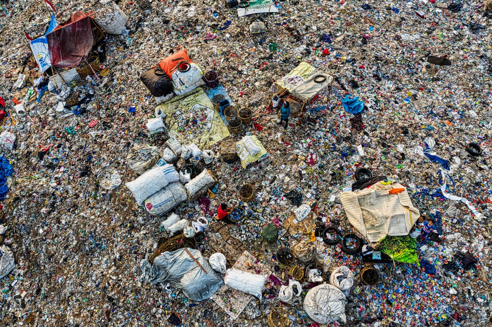

The Problem
Kampala generates 2,000 to 2,500 tons of waste daily. When schedules are unclear or collections are delayed, rubbish ends up on roadsides and in drainage channels.
Find verified household waste collection schedules, contact licensed waste collectors, learn how to sort rubbish, and report missed collections in your area.
Kampala Clean Neighborhood is a community information platform designed to connect households, landlords, small businesses, local leaders, and licensed waste collectors. Our goal is to make waste disposal rules simple to find and make reporting overflowing collection points easier.

Kampala generates 2,000 to 2,500 tons of waste daily. When schedules are unclear or collections are delayed, rubbish ends up on roadsides and in drainage channels.
We provide one reliable place to check collection days, locate KCCA-licensed private collectors, and promote waste separation at the household level.
Residents check their parish schedule or submit a report. An administrator reviews reports to verify locations before sharing them with collectors or local leaders.